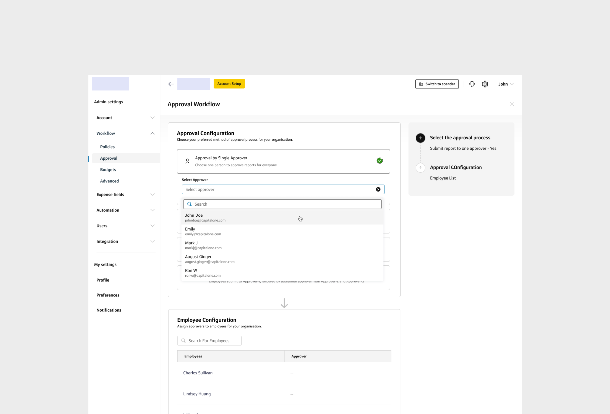
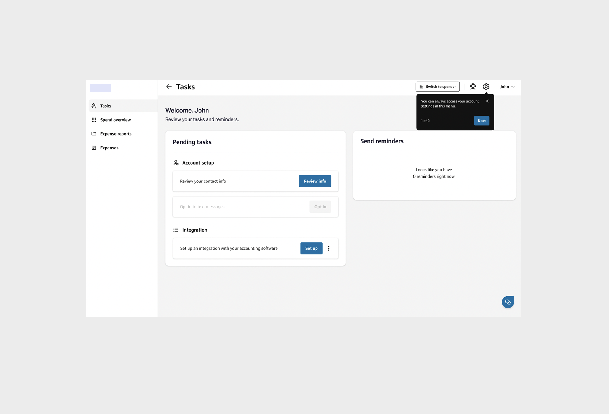

Fyle is an expense management platform that streamlines the entire process from
submitting receipts to reimbursement. It helps businesses efficiently handle receipt collection,
approval workflows, compliance verification, and accounting integration.
Problem Discovery
For years, onboarding at Fyle followed a high-touch, guided process. The
account setup team personally assisted businesses in configuring their accounts—a process that
typically took
1.5 months per business. This approach was effective but not scalable.
The breaking point came when Fyle secured a multi-million dollar
deal as part of its new embedded platform offering.
The corporate card program under our banking partner already had 600K to 800K customers and
2,000+ organizations that needed onboarding. Our existing high-touch approach simply couldn't
scale to meet this demand.
Framing the Challenge
How might Fyle design a self-serve onboarding experience that reduces account setup time from 1.5
months to minutes, enabling
businesses to realize value faster?
My role
I led the product and design phase of this initiative, bringing in
an experienced designer with product knowledge across the modules. I facilitated collaboration between Fyle's designers and engineers while
coordinating critique sessions with product and design teams from our first embedded offering
customers. To meet tight deadlines, I personally developed the high-level
interactions and flows before transitioning execution to my colleague.
Approach & Strategy
With the limited timeline, I thought through the problems and constraints before the kick off call multiple times and developed key strategies to ensure we delivered meaningful outcomes while
working within our constraints.
Key strategies
- Enabling users to onboard at their own pace – Instead of forcing a rigid setup
process, we allowed users to log in, initiate setup whenever they were ready, and freely explore
the product. This ensured onboarding remained non-blocking.
- Keeping the existing product functionality intact – Rather than overhauling
core features, we optimized the experience within the current system, ensuring minimal
engineering effort.
- Addressing the biggest friction point—approval setup – Through analysis, we
found that the approval setup process required frequent CS team intervention. However, a
complete backend fix wasn't feasible within our timeline. Instead, we redesigned the interface
experience to simplify onboarding without altering backend logic.
- Leveraging competitive insights – To avoid reinventing the wheel, we analyzed
B2B onboarding flows from industry-leading products and extracted best practices.
- Understanding real-world use cases – We engaged Account Managers to gather
insights on how businesses typically approached onboarding. This helped us refine our approach
and ensure our solution met user needs effectively.
- Building a Design System as per embedded client's branding guideline and using
the same for high-fidelity designs.
These strategies helped me successfully align stakeholders during our kickoff call, creating a shared
understanding of our approach.
Iterations & Learning Cycles
Iteration 1: The Sequential Approach
My initial plan followed a logical sequence: identify necessary steps, guide users through them one
by one, and redirect them to relevant modules. I believed this would create a smooth, step-by-step
experience. The plan included:
- Shortlist necessary steps – Invite employees, assign approvers, set up
policies, and configure integrations.
- Guide users step by step – Allow them to move forward only after completing the
current step.
- Redirect them seamlessly – Take users to the relevant module for setup, and
nudge them toward the next step.
Everything seemed logical on paper. But as we began exploring each step in detail, complexity
emerged.
1️⃣ Step 01: Invite Employees— Hitting with Complexities
- Initial approach: Redirect users to the Employee Page to invite their team
members.
- Problem discovered: This module wasn't just about inviting employees—it had
features like
assigning approvers, employee status management, bulk edits, and
exports that weren't
absolutely necessary for onboarding. These could easily overwhelm first-time users.
- Nuanced exploration: Could we hide those advanced features and reveal them
progressively?
- New question: When and how do we reveal them without confusing users later?
As a team, we temporarily parked this problem and moved to the next step, hoping a pattern would emerge.
2️⃣ Step 02: Setting Up Policies— Deeper Complexity
Policies in Fyle were inherently complex, often requiring Customer Success intervention.
Simplifying policy setup was absolutely necessary. Instead of immediately redesigning it,
we dug deeper into data to find the most commonly used conditions.
- Data Insight: Receipt settings were
the most commonly used policy condition (~85%).
In the US, some organizations needed receipts above certain amounts, some made them mandatory,
and a few never
required them.
- New questions: How do we highlight receipt settings without overwhelming users
with other conditions? When would these other conditions appear?
3️⃣ Step 03: Approval Setup
The approval workflow setup was previously buried under the Policies Page, making it almost
undiscoverable.
- Win! After discussions with engineering, we got approval to separate the
approval flow from policies—without changing backend logic.
- However, approval workflows varied across organizations:
- üîπ Some had a single primary approver.
- üîπ Others had multi-stage approvals with conditions.
My colleague explored multiple variations, but something always felt off as the
information architecture
looked complex.

Early approval workflow exploration
A key trade-off emerged here: fully supporting multi-stage
approvals would have required significant backend changes, which wasn't feasible.
I advocated for
prioritizing single-stage setups based on data showing it mets 93.42% of use cases, convincing the
banking partner to defer complex workflows to a post-launch phase.
4️⃣ Step 04: Integrations
Unlike other steps, integration setup was entirely self-serve. However, it took an average of 15
minutes to complete—requiring focused effort.
- Key insight: Instead of pushing users to set up integrations upfront, we could
prompt them after they had completed fundamental settings.
The Pivot
By Week 3, it became painfully clear—our initial approach wasn't going to work.
- Why?
- Settings are a one-time setup—Users rarely revisit them.
- Progressive disclosure wasn't the right approach for solving step 01 and step 02—Hiding
features initially made future access unintuitive.
- Redirecting to existing complex pages created more confusion than clarity.
I needed to change our strategy fundamentally.
What if we asked users to finish the basic settings first in a dedicated
onboarding experience and then explore the product?
Final Solution: Prioritizing Core Actions
Engineering Trade-Offs & A Fresh Perspective
This approach meant the engineering team couldn't reuse existing pages. To move forward,
I created
rough wireframes for different pages and met with the internal engineering team for further
discussions. A tension arose when engineering pushed back on building new pages due to time
constraints. I negotiated a compromise by aligning the new structure with existing patterns,
reducing their workload while maintaining user clarity.
Coming back to the designs, here's how I structured our approach:
Building the Design System
In embedded offerings, the product must adhere to the client's branding guidelines. Because Fyle's
design system is token-based, I was able to create a new design system following the client's
guidelines in just two days. I pulled in another colleague to give us the god speed.
User Initiating the Setup
Once launched, the user lands on a welcome page. They can either delegate the entire flow or set up
the account on their own.
Here are a few screenshots of the manual setup flow:
User's essential tasks for faster time to value in manual setup process:
Inviting Employees
After interacting with "Manage Roles," the user landed on a new employee page, designed with a
similar structure to the actual employee page but focused only on required information.
- To further simplify user onboarding, we imported all users from the banking partner as
Spenders automatically.
- By changing our approach, the interface became more intuitive, saving
us from writing numerous
conditional blocks in backend.
Setting Up Policies
- Following the same streamlined approach as the Employee Page, we further simplified this
interface using the data insights. Instead of overwhelming users with a bulk set of
policy conditions,
we focused on receipt conditions alone (~85% of organizations
use
this condition).
- Unlike the main Fyle product, we simplified the receipt settings with 3 explicit receipt options
for users.

Setting Up Approvers
Note: Skipping the automated expense report setup as it was straightforward.
- New approach: After analyzing the data, I found that businesses primarily use single-stage approval. When a second-stage approval
is used, it is mostly based on amount conditions. The third-stage approval system was not
an immediate need. Therefore, by default, I took the product call: Assigning the admin as the primary approver.
We provided a CTA to add a second-stage approver. This significantly simplified the interface.
Successful Setup
- The integration setup nudges were moved to the dashboard.
- The essential tasks for the admin, which were previously available in another mode, were made
explicit on the dashboard.

External Usability Testing
I presented our approach to the banking partner team, who approved the designs.
Following that, the team proceeded with external usability testing.
Through testing, we found that while users could complete the setup in less
than 5 minutes (or even
faster),
some struggled with terminology like "receipt settings" and
"expense reporting."
They also wondered whether they could set it up later
if they skipped it now, which created a sense of compulsion to proceed with the default settings.
My colleague took the lead in addressing this feedback for the final implementation.
Closed Beta Launch and General Availability
After incorporating usability feedback, the team launched the closed beta, and then
proceeded with General Availability (GA).
I tracked key KPIs (set up by the engineers and a PM) throughout the process, and the results
validated our success—hitting our target
metrics gave us the confidence to move forward with GA as planned.
Impact
- NPS:61
- Total orgs onboarded: 700+
- Total expenses processed: $353.33M
It is just the beginning of something great. With this initiative, we laid
the foundation for Fyle's embedded product offering.
It opened the door for collaboration with other big clients.
Key Learnings
- Pivot when things don't work.
- Document the flow, even if it already exists in the product—it helps developers move faster. We
experienced some back-and-forth even after the handoff was completed.
This experience taught me to preemptively align documentation with engineering sprints, a
practice I now apply to ensure smoother handoffs in scalable projects.